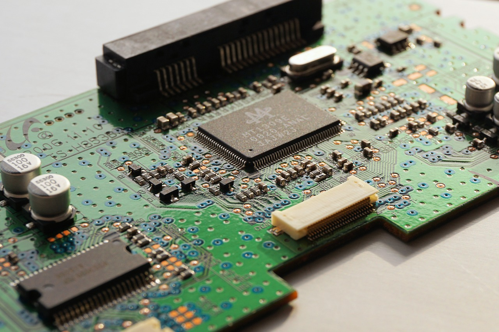

Strojna oprema računalnika

Je osnovno tiskano vezje v osebnem računalniku. Dovoljuje vsem delom računalnika, da dobijo elektriko in da komunicirajo med seboj. Glavna naloga je, da drži mikroprocesor in da se nanjo priključijo vse ostale enote (procesor, bralno pisalni pomnilnik, razširitvene kartice-npr. grafična, zunanji pomnilnik…). Vsebuje tudi mnoge vmesnike (miškin, tipkovničin, USB, serijski, tiskalniški…).
Najpomembnejši sestavni del matične plošče je sistemski nabor, ki ju sestavljata dva čipa. Sistemski nabor povezuje ostale komponente med seboj in določa zmogljivosti matične plošče.
Po navadi je razdeljen na dva dela, severni in južni most.
Severni most skrbi za komunikacijo procesorja s pomnilnikom, z grafično kartico in z južnim mostom. Določa, katere procesorje sistemski nabor podpira in kakšno vrsto pomnilnika lahko uporabimo. Določa tudi največjo hitrost pomnilniškega vodila in količino pomnilnika. Precej se greje, zato ima večina osnovnih plošč nameščeno hladilno rebro z manjšim ventilatorjem.
Južni most skrbi za povezavo z vzhodno/izhodnimi napravami in vodilom PCI ter za varčevanje z energijo. V njem je vgrajen urin signal, ki skrbi za takt procesorja. Naprave priključene na matično ploščo so povezane z vodili, ki so ali paralelna ali pa serijska. Trenutni trendi se nagibajo v smer serijskih prenosov, le pri povezavi pomnilnika še vedno prevladujejo paralelni prenosi, ki omogočajo veliko večje prenose podatkov kot serijski.
